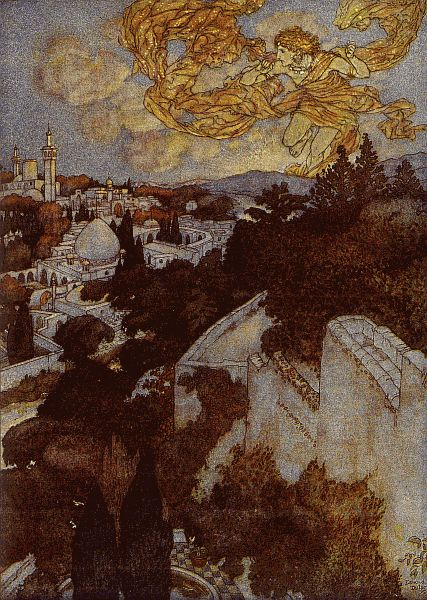
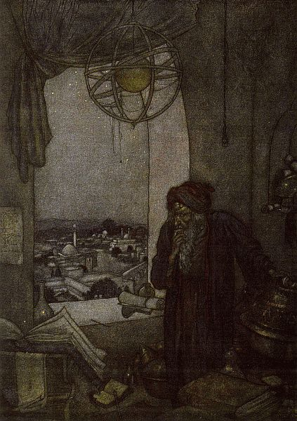
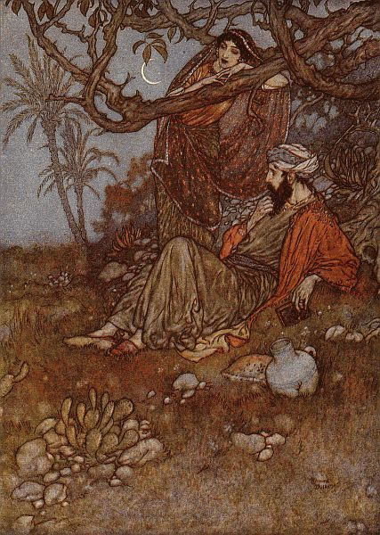
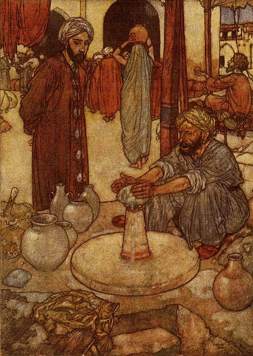
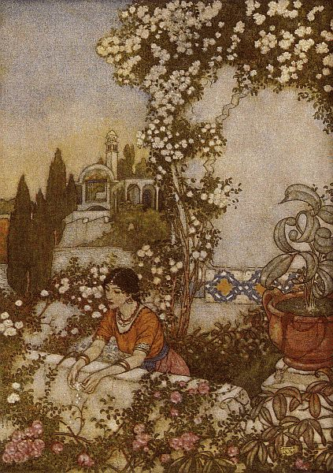

Language & Literature · Pioneers · Mathematics · Astronomy · Grades 7–12
Omar Khayyam
The Tentmaker of Science & the Rubáiyát · عمر خیام
Nine hundred years ago, in Persia, one man solved cubic equations with a parabola and a circle, measured the year so precisely that his calendar beats the one on your wall, and questioned Euclid’s most famous assumption. Then, in 1859, an English poet published 75 quatrains under his name, and the world forgot the mathematician and fell in love with the poet.
Grades 7–12
2–3 class periods
5 interactive labs
Poetry · Algebra · Calendars · Geometry
Guiding question: How much of “Omar Khayyam” did Edward FitzGerald invent, and can one mind really hold both a cubic equation and a poem about letting go?

“Awake! for Morning in the Bowl of Night…” Edmund Dulac painted this for the Rubáiyát’s first quatrain in 1909, fifty years after FitzGerald and almost eight hundred after Khayyam. Every picture of “Omar” you have seen is a picture of what Europe imagined.
Edmund Dulac, 1909 (Hodder & Stoughton) · Public domain · scan via Project Gutenberg #35260
1 · Who he was
The Tentmaker of Nishapur
Ghiyath al-Din Abu’l-Fath Omar ibn Ibrahim al-Khayyam was born in Nishapur, in the province of Khorasan in northeastern Iran, in 1048, and died there in 1131. Khayyām means “tentmaker”: probably his father’s or grandfather’s trade. He lived under the Seljuk Turks, whose sultans ruled from Anatolia to Central Asia and paid scholars to measure the sky, cast horoscopes, and argue philosophy at court.
In his own lifetime, and for centuries after, Persians knew him as a mathematician, astronomer and philosopher: a difficult, brilliant man people called the “Proof of Truth.” Only a few short poems were ever linked to his name while he lived, and no manuscript of poems from his own lifetime survives.
Khayyam in PersiaAlgebra, astronomy, calendar reform, geometry, philosophy. A scientist who also wrote a few quatrains.
“Omar” in the WestA wine-loving, doubting poet of roses and dust, invented largely in 1859 by Edward FitzGerald. A poet who also, it turned out, did some maths.
A pun in a quatrain
FitzGerald opened his introduction with a quatrain that plays on the name. His teacher Edward Cowell translated it literally:
Khayyam, who stitched the Tents of Science,
Has fallen in Grief’s furnace and been suddenly burned;
The shears of Fate have cut the tent-ropes of his life,
And the Broker of Hope has sold him for nothing!
Bodleian manuscript, quatrain 22, translated by E. B. Cowell; printed in FitzGerald’s introduction
Legend check: the three schoolfellows
FitzGerald also passed on a famous story. Three boys study under one master in Nishapur and swear that whoever rises first will help the others: Nizam al-Mulk becomes the sultan’s vizier, Hasan-i Sabbah founds the feared Order of the Assassins, and Omar asks only for a pension so he can study the stars. It is a perfect story. Test it like a historian:
Evidence for: it appears in Persian histories, and the three men were real and at the same court.
Evidence against: Nizam al-Mulk was born around 1018, about thirty years before Khayyam. They could not have been schoolboys together.
Verdict: a legend that grew later, probably because it neatly ties three famous lives together. A story can be true to a feeling and false to the facts.
2 · Nine centuries in one line
From Nishapur to the Titanic
The strangest thing about Khayyam’s fame is its gap: a scientist’s life in the eleventh century, then a poet’s fame exploding in the nineteenth. Zoom out on the track and watch the empty centuries in between.
Born in Nishapur, Khorasan, probably on 18 May 1048 (the date comes from a horoscope recorded by a younger contemporary).
In Samarkand he writes his Treatise on the Demonstration of Problems of Algebra, solving cubic equations by intersecting conic sections.
Sultan Malik-Shah and his vizier Nizam al-Mulk bring him to Isfahan to lead astronomers at a new observatory.
Finishes his Commentary on the Difficulties in the Postulates of Euclid, attacking the parallel postulate.
The Jalali (Maliki) calendar starts its count, with the new year set at the spring equinox.
Nizam al-Mulk is murdered and Malik-Shah dies weeks later. Court support for the observatory ends.
Dies in Nishapur. His student Nizami Aruzi remembered him saying his tomb would lie “where the north wind may scatter roses over it”; years later Nizami found it beside a garden wall, hidden under fallen blossoms.
A scribe in Shiraz copies 158 quatrains attributed to Khayyam: the manuscript (now Ouseley 140 in Oxford’s Bodleian Library) that FitzGerald will read.
Edward Cowell, FitzGerald’s Persian teacher, copies the Bodleian manuscript and sends it to him.
FitzGerald publishes 75 quatrains, anonymously, in a pamphlet of 250 copies. Almost nobody buys it.
Unsold copies, marked down to a penny at Bernard Quaritch’s bookshop, are discovered by the poets Dante Gabriel Rossetti and Algernon Swinburne.
Second edition: 110 quatrains. FitzGerald keeps revising: third edition 1872, fourth 1879.
The American artist Elihu Vedder publishes a lavish illustrated edition. The poem becomes a gift-book.
The fifth edition, with FitzGerald’s last revisions, appears six years after his death: 101 quatrains.
The Russian scholar Valentin Zhukovsky shows that dozens of “Khayyam” quatrains also appear under other poets’ names.
Edmund Dulac’s illustrated edition (the paintings in this lesson).
The “Great Omar”, a Rubáiyát bound in gold and over a thousand jewels, goes down with the Titanic.
Iran adopts the Solar Hijri calendar, a direct descendant of the Jalali, still in use today.
A new mausoleum by architect Houshang Seyhoun opens over his grave in Nishapur, its lattice carved with his quatrains.
3 · The mathematician
Solving a Cubic with a Parabola and a Circle
Around 1070, in Samarkand, Khayyam wrote the most ambitious algebra book of his age. He had no letters for unknowns, no negative numbers and no equals sign. Equations were sentences: “a cube and sides equal a number.” In modern symbols that is
x³ + c·x = d (c and d positive)
Quadratics could be solved with ruler and compass, as Euclid and al-Khwarizmi had shown. Cubics could not. Khayyam sorted every equation up to the cube into 25 types and solved the 14 cubic types by a new idea: draw two conic sections (curves you get by slicing a cone) and let the point where they cross measure out the answer.
He also admitted what he could not do. He wrote that he had failed to find a solution by arithmetic alone and hoped someone after him would. Four centuries later, Italian mathematicians did: Gerolamo Cardano published the formula in 1545.

A scholar among his instruments. Dulac’s picture for quatrain XXIV (1859). It is the closest any illustrated Rubáiyát came to showing Khayyam as he really worked: at night, with a sphere of the heavens.
Edmund Dulac, 1909 · Public domain · Project Gutenberg #35260
Why the trick works
Let a = √c and b = d ÷ c. Draw the parabola x² = a·y and the circle whose diameter runs from 0 to b along the axis, x² + y² = b·x. Where they cross, put y = x²/a into the circle:
So the crossing point’s distance along the axis is the root. Khayyam proved this with lengths and areas, the way Euclid would. Algebra, for him, was geometry you could prove.
Lab 1 · Khayyam’s construction
Draw the parabola x² = a·y, with a = √c.
Draw the circle on the diameter b = d ÷ c.
Mark where they cross.
Drop a line to the axis: that length is x.
Equationx³ + 6x = 20
a = √c—
b = d ÷ c—
Root x—
Check x³ + cx—
Try this
Load Cardano’s example, x³ + 6x = 20. Khayyam’s picture gives x = 2 exactly. Cardano’s 1545 formula gives ∛(√108 + 10) − ∛(√108 − 10), which is also 2, though it takes a calculator to believe it.
Notice
However you set c and d, the curves cross exactly once (besides the origin). That is why this type has exactly one positive root.
Big idea
Joining curves and equations is the heart of Descartes’s coordinate geometry, five centuries later. Khayyam was already treating a curve’s crossing point as a number.
4 · The astronomer
A Calendar That Beats Yours
A calendar has one job: keep the date in step with the seasons. The trouble is that the year, from one spring equinox to the next, is not a whole number of days. It is about 365.24219 days. Any rule for leap days is really a fraction trying to match that 0.24219.
The Julian calendar (46 BC) adds 1 day every 4 years: 0.25. A little too much.
Malik-Shah’s astronomers, led by Khayyam, started the Jalali calendar in 1079. Its new year was fixed to the spring equinox itself. Worked out as arithmetic, its leap years follow a pattern of 8 in every 33 years: 0.242424…
The Gregorian calendar on your wall (1582) adds 97 days every 400 years: 0.2425.
FitzGerald even put the calendar into the poem, with a shrug (1889, LVII):
Ah, but my Computations, People say,
Reduced the Year to better reckoning?—Nay,
’Twas only striking from the Calendar
Unborn To-morrow, and dead Yesterday.
FitzGerald, fifth edition, LVII. Not in the 1859 edition: FitzGerald added it later. The Persian sources Heron-Allen found say nothing about calendars.
Lab 2 · Calendar drift race
Julian · 1/4
—
Gregorian · 97/400
—
Jalali · 8/33
—
equinox comes later on the calendar ←→ equinox comes earlier
The 33-year cycle
Seven leap years four years apart, then one five years later. Teal squares are leap years.
Invent your own leap rule
Honest note
The real Jalali calendar did not run on a fixed rule. Its new year was set by observing when the Sun crossed the equator, so it never drifted at all. “8 in 33” is the arithmetic pattern those observations work out to, and it is the pattern later astronomers credited to Khayyam’s team.
Maths connection
1/4, 7/29, 8/33, 31/128… are the continued-fraction convergents of 0.24219: the best fractions for their size. The Julian calendar used the first one; Khayyam’s pattern is the third.
Still running
Iran and Afghanistan use the Solar Hijri calendar, the Jalali’s descendant. Nowruz, the Persian new year, still falls on the spring equinox.
5 · The geometer
Doubting Euclid’s Fifth Postulate
Euclid built geometry on five assumptions. The fifth, the parallel postulate, never sat right with mathematicians: it reads like a theorem, so surely it could be proved from the other four? In 1077 Khayyam tried. He drew a four-sided figure that now carries his name together with an Italian’s, the Khayyam–Saccheri quadrilateral:
a base, and two equal sides standing at right angles on it;
join their tops. Are the two top (summit) angles right angles?
If they are, Euclid’s parallel postulate follows. Khayyam considered three possibilities (the summit angles are right, acute, or obtuse) and argued the last two away. Giovanni Saccheri tried the same attack in 1733. Both were wrong in an interesting way: in the 1800s Lobachevsky, Bolyai and Gauss showed that the “impossible” cases describe perfectly consistent non-Euclidean geometries, which now sit inside Einstein’s relativity and every GPS satellite’s maths.
Lab 3 · Bend the plane
The angle shown uses Gauss–Bonnet for a small quadrilateral: each summit angle ≈ 90° + ½·K·(area). On a curved surface, bigger shapes bend further from 90°; at curvature 0 nothing you draw can.
Khayyam’s triangle
Khayyam also wrote that he had found a way to take square, cube and higher roots using a rule for expanding (a + b)ⁿ. That treatise is lost, but the rule he needed is the triangle of binomial coefficients, which al-Karaji had used around 1000 and Chinese mathematicians knew too. In Iran it is often called Khayyam’s triangle; in English classrooms, Pascal’s (Pascal was born in 1623).
Lab 4 · Expand (a + b)ⁿ
6 · The poet
What Is a Rubāʿī?
A rubāʿī (رباعی, from the Arabic for “four”) is a Persian quatrain: four lines, usually rhymed AABA. The plural is rubāʿiyāt, so “The Rubáiyát of Omar Khayyám” just means “Omar Khayyam’s quatrains.” Each one stands alone, like a tiny argument:
Lines 1–2 · Set it up
An image or a claim, both lines on the same rhyme (A, A).
Line 3 · The turn
The rhyme breaks (B). So does the thought: a doubt, a twist, a “but”.
Line 4 · Land it
Back to the A rhyme, and a punchline that clicks shut.
The Moving Finger writes; and, having writ,
Moves on: nor all your Piety nor Wit
Shall lure it back to cancel half a Line,
Nor all your Tears wash out a Word of it.
FitzGerald, 1889, LXXI. Rhymes: writ · Wit · (Line) · it = A A B A. Notice how line 3 hangs, unrhymed, until line 4 closes the trap.
Did Khayyam write the Rubáiyát?
Here the story gets honest and difficult. Khayyam died in 1131. The first quatrains quoted under his name appear decades later, in books by other writers; the big manuscript collections come centuries later, and they keep growing: from a few dozen quatrains to hundreds, to over a thousand. Scholars found that many “Khayyam” quatrains also turn up under other poets’ names (Zhukovsky called them wandering quatrains).
What scholars agree on
Khayyam was famous as a scientist first. Short quatrains were a popular form anyone might write in the margins of a life, and famous names attracted stray poems.
What they argue about
Whether a small core goes back to Khayyam himself, and how to pick it out. Different scholars’ “authentic” lists range from a handful to around a hundred.
How they test it
Older sources count for more. A quatrain quoted near his lifetime beats one that first appears in a late manuscript. One that appears under another poet’s name is suspect.
So when we say “Khayyam’s Rubáiyát,” we mean a tradition: a voice of doubt and delight that collected around his name, then was remade in English. That makes it a perfect case study in what translation and authorship really are.
7 · Read it in three layers
The Persian, FitzGerald 1859, FitzGerald 1889
In 1899 the scholar Edward Heron-Allen tracked down the Persian quatrain behind almost every stanza FitzGerald wrote, and translated each one word for word. Put the layers side by side and you can watch a translation turn into a new poem. Then compare FitzGerald’s first and last editions: highlighted words are what he changed in 1889; struck words are what he cut.
Lab 5 · Three layers
Awake! / Wake!
Word for word (Heron-Allen)
The Sun casts the noose of morning upon the roofs, Kai Khosru of the day, he throws a stone into the bowl: Drink wine! for the Herald of the Dawn, rising up, Hurls into the days the cry of “Drink ye!”
From the Persian manuscript: C. 134
FitzGerald, 1859 · I
Awake! for Morning in the Bowl of Night Has flung the Stone that puts the Stars to Flight: And Lo! the Hunter of the East has caught The Sultan’s Turret in a Noose of Light.
FitzGerald, 1889 · I
Wake! For the Sun, who scatter’d into flight The Stars before him from the Field of Night, Drives Night along with them from Heav’n, and strikes The Sultan’s Turret with a Shaft of Light.
The 1859 opening is a desert camp breaking at dawn: a stone flung in a bowl was the signal to strike the tents. Thirty years later FitzGerald swapped the nomad image for a plainer sunrise. Heron-Allen notes the stone appears in only one manuscript; most read wine.
A Book of Verses
Word for word (Heron-Allen)
If a loaf of wheaten bread be forthcoming, A gourd of wine, and a thigh-bone of mutton, And then, if thou and I be sitting in the wilderness,— That were a joy not within the power of any Sultan.
I desire a flask of ruby wine and a book of verses Just enough to keep me alive, and half a loaf is needful, And then, that thou and I should sit in the wilderness, Is better than the kingdom of a Sultan.
From the Persian manuscripts: O. 155, O. 149
FitzGerald, 1859 · XI
Here with a Loaf of Bread beneath the Bough, A Flask of Wine, a Book of Verse—and Thou Beside me singing in the Wilderness— And Wilderness is Paradise enow.
FitzGerald, 1889 · XII
A Book of Verses underneath the Bough, A Jug of Wine, a Loaf of Bread—and Thou Beside me singing in the Wilderness— Oh, Wilderness were Paradise enow!
FitzGerald fused two Persian quatrains into one, and quietly swapped the thigh-bone of mutton for a book of verses. The most quoted line in English Rubáiyát is, in part, FitzGerald’s own.
Take the Cash
Word for word (Heron-Allen)
They say that the Garden of Eden is pleasant with houris: I say that the juice of the grape is pleasant. Hold fast this cash and keep thy hand from that credit, For the noise of drums, brother, is pleasant from afar.
From the Persian manuscript: O. 34
FitzGerald, 1859 · XII
"How sweet is mortal Sovranty!"—think some: Others—"How blest the Paradise to come!" Ah, take the Cash in hand and waive the Rest; Oh, the brave Music of a distant Drum!
FitzGerald, 1889 · XIII
Some for the Glories of This World; and some Sigh for the Prophet’s Paradise to come; Ah, take the Cash, and let the Credit go, Nor heed the rumble of a distant Drum!
Cash and credit are already in the Persian: the pleasure in hand against the promised paradise. The distant drum is a proverb (“drums sound sweet from far away”). In 1889 FitzGerald made the drum a thing to ignore.
Snow on the Desert
Word for word (Heron-Allen)
O heart! Suppose all this world’s affairs were within your power, And the whole world from end to end as you desire it, And then, like snow in the desert, upon its surface Resting for two or three days, understand yourself to be gone!
From the Persian manuscript: C. 266
FitzGerald, 1859 · XIV
The Worldly Hope men set their Hearts upon Turns Ashes—or it prospers; and anon, Like Snow upon the Desert’s dusty Face Lighting a little Hour or two—is gone.
FitzGerald, 1889 · XVI
The Worldly Hope men set their Hearts upon Turns Ashes—or it prospers; and anon, Like Snow upon the Desert’s dusty Face, Lighting a little hour or two—is gone.
The simile is Persian: hopes rest on the world like snow on sand, then vanish. FitzGerald adds “Lighting”, so the snow glitters before it goes.
Water and Wind
Word for word (Heron-Allen)
For a while, when young, we frequented a teacher, For a while we were contented with our proficiency; Behold the end of the discourse:—what happened to us? We came like water and we went like wind.
Being (once) a falcon, I flew from the World of mystery, That from below I might soar to the heights above; But, not finding there any intimate friend, I came out by the same door wherein I went.
From the Persian manuscripts: O. 121, C. 281
FitzGerald, 1859 · XXVIII
With them the Seed of Wisdom did I sow, And with my own hand labour’d it to grow: And this was all the Harvest that I reap’d— "I came like Water, and like Wind I go."
FitzGerald, 1889 · XXVIII
With them the seed of Wisdom did I sow, And with mine own hand wrought to make it grow; And this was all the Harvest that I reap’d— "I came like Water, and like Wind I go."
The last line, “I came like Water, and like Wind I go,” is almost word for word the Persian. The schoolroom frame around it is FitzGerald’s, built from a second quatrain about a falcon who “came out by the same door”.
The Chequer-board
Word for word (Heron-Allen)
To speak plain language, and not in parables, We are the pieces and heaven plays the game, We are played together in a baby-game upon the chess-board of existence, And one by one we return to the box of non-existence.
From the Persian manuscript: O. 94
FitzGerald, 1859 · XLIX
’Tis all a Chequer-board of Nights and Days Where Destiny with Men for Pieces plays: Hither and thither moves, and mates, and slays, And one by one back in the Closet lays.
FitzGerald, 1889 · LXIX
But helpless Pieces of the Game He plays Upon this Chequer-board of Nights and Days; Hither and thither moves, and checks, and slays, And one by one back in the Closet lays.
One of the closest translations in the poem. Watch the verbs: in 1859 Destiny “mates” the pieces; in 1889 it “checks”. The Persian says plainly that “heaven” plays; FitzGerald’s 1889 “He” makes the player a person.
The Moving Finger
Word for word (Heron-Allen)
From the beginning was written what shall be; Unhaltingly the Pen (writes) and is heedless of good and bad; On the First Day He appointed everything that must be— Our grief and our efforts are vain.
From the Persian manuscript: O. 31
FitzGerald, 1859 · LI
The Moving Finger writes; and, having writ, Moves on: nor all thy Piety nor Wit Shall lure it back to cancel half a Line, Nor all thy Tears wash out a Word of it.
FitzGerald, 1889 · LXXI
The Moving Finger writes; and, having writ, Moves on: nor all your Piety nor Wit Shall lure it back to cancel half a Line, Nor all your Tears wash out a Word of it.
The Persian has a Pen that writes our fate “from the beginning”, not a finger. FitzGerald’s Moving Finger may echo the hand that wrote on Belshazzar’s wall (Daniel 5). And the poem about lines that can never be cancelled was revised by its translator for thirty years.
The Sorry Scheme
Word for word (Heron-Allen)
Had I, like God, control of the heavens, Would I not do away with the heavens altogether, Would I not so construct another heaven from the beginning That, being free, one might attain to the heart’s desire?
From the Persian manuscript: C. 395
FitzGerald, 1859 · LXXIII
Ah, Love! could thou and I with Fate conspire To grasp this sorry Scheme of Things entire, Would not we shatter it to bits—and then Re-mould it nearer to the Heart’s Desire!
FitzGerald, 1889 · XCIX
Ah Love! could you and I with Him conspire To grasp this sorry Scheme of Things entire, Would not we shatter it to bits—and then Re-mold it nearer to the Heart’s Desire!
In the Persian the speaker imagines being God and rebuilding the heavens. FitzGerald softened it to a plan made “with Fate” (1859), then “with Him” (1889): the lovers would conspire with God, not replace Him.
The Rising Moon
Word for word (Heron-Allen)
Since no one will guarantee thee a to-morrow, Make thou happy now this lovesick heart; Drink wine in the moonlight, O Moon, for the moon Shall seek us long and shall not find us.
From the Persian manuscript: O. 5
FitzGerald, 1859 · LXXIV
Ah, Moon of my Delight who know’st no wane, The Moon of Heav’n is rising once again: How oft hereafter rising shall she look Through this same Garden after me—in vain!
FitzGerald, 1889 · C
Yon rising Moon that looks for us again— How oft hereafter will she wax and wane; How oft hereafter rising look for us Through this same Garden—and for one in vain!
The Persian puns on “moon” (a beloved’s face) and the moon in the sky: it will look for us and not find us. FitzGerald keeps the moon and the absence, and leaves the speaker as the one missing.
Read like a translator
Which layer would you trust to tell you what the Persian says? Which would you read for pleasure? Can one translation do both?
Find one image FitzGerald added and one he removed. What did each choice do for an English reader in 1859?
FitzGerald kept revising for thirty years. Is the 1889 version better, or just different? Point to a word.
8 · The English Omar
FitzGerald’s Omar: A “Live Sparrow”
Edward FitzGerald (1809–1883) was a shy, wealthy Englishman who lived quietly in Suffolk, sailed, and translated. His friend and teacher Edward Cowell taught him Persian and, in 1856, sent him a copy of the Bodleian manuscript. FitzGerald did not translate it quatrain by quatrain. He picked, merged, invented, and arranged them into one story: dawn, a day in a garden, arguments about fate, a potter’s shop full of talking pots, nightfall, and an empty glass.
His theory
He told Cowell a translation must live, even if it strays: “Better a live Sparrow than a stuffed Eagle.”
His attitude
In another letter he called it an “amusement” to take what liberties he liked with the Persian poets, who, he thought, needed “a little Art” to shape them. Is that confidence, or condescension? Many readers today hear both.
The order is his
Persian manuscripts usually sort quatrains alphabetically by rhyme letter, like a dictionary. The “story” of the Rubáiyát, from dawn to dusk, is FitzGerald’s invention.
From the penny box to a craze
The 1859 pamphlet flopped. Two years later the poets Rossetti and Swinburne found leftover copies in a bookseller’s bargain box, and the poem spread by word of mouth. By 1900 the Rubáiyát was one of the best-loved poems in English: hundreds of editions, dining clubs, cigarettes and teashops named after it, and dozens of parodies (Project Gutenberg alone has The Rubáiyát of a Persian Kitten, The Golfer’s Rubaiyat and The Rubáiyát of Bridge). The most famous copy, the “Great Omar”, was bound in gold and jewels and sank with the Titanic in 1912.

“A Book of Verse—and Thou”Quatrain XI (1859). Compare the Persian’s bread, wine and “thigh-bone of mutton” in Lab 5: the painting follows FitzGerald, not the manuscript.Edmund Dulac, 1909 · Public domain · Gutenberg #35260

The PotterQuatrain XXXVII (1889): “I watch’d a Potter thumping his wet Clay.” In the Kúza-Náma section, pots argue about who made them, and why some came out crooked.Edmund Dulac, 1909 · Public domain · Gutenberg #35260

The Blowing RoseQuatrain XIV (1889). Roses, gardens and nightingales were stock images of Persian poetry; Victorian readers took them as the real Persia.Edmund Dulac, 1909 · Public domain · Gutenberg #35260
Why did Victorians love it?
Darwin’s Origin of Species came out the same year, 1859. For readers whose certainties were shaking, a medieval Persian who doubted, joked and still loved the world felt like a friend. FitzGerald’s Omar said out loud what many of them only thought. Whether that was Khayyam’s voice, or FitzGerald’s, is the question this lesson keeps asking.
9 · Your turn
The Quatrain Forge
Write one rubāʿī of your own. The forge reads your line endings, guesses the rhyme letters, and counts syllables. English spelling fools any computer, so if a letter is wrong, press it to change it. Aim for AABA with about 10 syllables a line, and make line 3 turn.
Lab 6 · Forge
Subject: anything you can’t take back.
0
0
0
0
Chain them
Robert Frost’s “Stopping by Woods on a Snowy Evening” is built from rubāʿiyāt: each stanza’s unrhymed third line becomes the rhyme of the next (AABA BBCB CCDC DDDD). The forge tells you which rhyme your next stanza would need.
Make the turn real
Weak: line 3 just adds another detail. Strong: line 3 says but, unless, yet, or asks a question, so line 4 has something to answer.
10 · Think it through
Seminar: Fate, Wine and the Preacher
The Rubáiyát keeps asking old questions: life is short, the future is hidden, so what should we do with today? The Bible’s book of Ecclesiastes asks the same ones. Read them side by side.
Ecclesiastes
“Vanity of vanities… all is vanity” (1:2–4). “Go, eat your bread with joy, and drink your wine with a merry heart” (9:7–10). But it ends: “Fear God and keep His commandments” (12:13–14).
The Rubáiyát
“Take the Cash, and let the Credit go.” “I came like Water, and like Wind I go.” The poem shares the Preacher’s sense that life is brief, but often stops at enjoyment, or at a complaint against fate.
The writing on the wall
FitzGerald’s Moving Finger replaced the Persian’s Pen. Readers who knew their Bible heard the hand that wrote judgment on Belshazzar’s palace wall (Daniel 5:5, 5:25–28).
Reading the wine
Persian readers have long argued about the wine in these quatrains. Sufi (mystical) readers take wine, the tavern and the beloved as symbols of the soul drunk on God’s love. Others read them literally, as a skeptic’s rebellion. FitzGerald chose the second reading and made it famous. A careful reader asks which reading the words support, rather than which one they prefer.
11 · Quick check
Check Your Understanding
Key Terms
Rubāʿī / rubāʿiyāt
A Persian four-line poem, usually AABA; the plural.
Quatrain
Any four-line stanza or poem.
The turn
The shift in thought, here on the unrhymed third line.
Wandering quatrain
A quatrain found under more than one poet’s name.
Conic section
A curve made by slicing a cone: circle, ellipse, parabola or hyperbola.
Cubic equation
An equation whose highest power is x³.
Tropical year
The time from one spring equinox to the next, about 365.24219 days.
Leap rule
How often a calendar adds a day to keep pace with the seasons.
Continued fraction
A way to find the best simple fractions for a number: 1/4, 7/29, 8/33…
Parallel postulate
Euclid’s fifth assumption; equivalent to the angles of a triangle summing to 180°.
Non-Euclidean geometry
Consistent geometry on curved surfaces, where the parallel postulate fails.
Binomial coefficients
The numbers in the expansion of (a + b)ⁿ: Khayyam’s, or Pascal’s, triangle.
Sources & Further Reading
Edward FitzGerald, Rubáiyát of Omar Khayyám, first (1859) and fifth (1889) editions. All FitzGerald quotations in this lesson: Project Gutenberg #246.
Edward Heron-Allen, Edward FitzGerald’s Rubâ’iyât of Omar Khayyâm with their Original Persian Sources (1899), reprinted in The Sufistic Quatrains of Omar Khayyam (1903). All word-for-word versions in Lab 5: Project Gutenberg #38511.